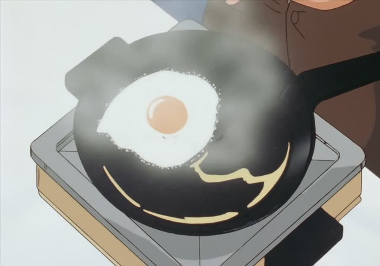
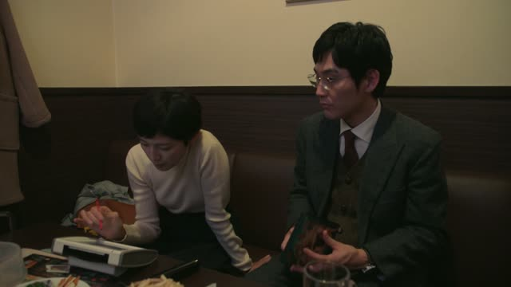
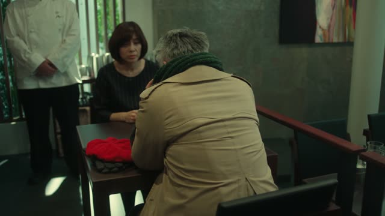
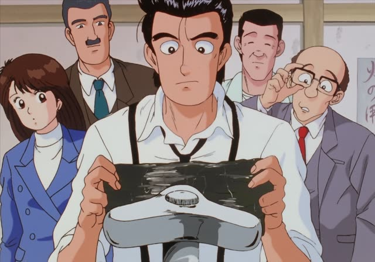

～ことになる
| Polite | ～ことになりました |
|---|---|
| Casual | ～ことになった |
Same meaning: "it's been decided that, it turns out". Only the politeness changes.
Good Morning Call · Episode 13
代わりに、いっちゃんが来ることになりまして
"So Icchan is going to come instead"
～ことになる means "it's been decided that, it ends up that": the decision wasn't only yours. Plain verb + ことになった: 来ることになった.
On this card, Nao explains a change of plans: it turned out Icchan will come. ことになりまして is polite and a little humble.
ことになっている = it's the rule: 手で口元を隠して飲むことになっている.
1 Litre of Tears · Episode 8
別の学校に転校することになった。
"She's going to transfer to another school."
On this card, the teacher tells the class Aya is leaving. Not just her choice: it's been decided.
Quick Examples
Telling your coworkers.
来月、大阪に転勤することになりました。
"I'm being transferred to Osaka next month."
PoliteYour friend got news.
結婚することになったよ！
"We're getting married!"
A plan settled, often with others.
CasualA school rule.
学校では制服を着ることになっています。
"At school, you're supposed to wear a uniform."
ことになっている: the rule.
PoliteTalking about the weekend.
雨で中止になった。
"It got cancelled because of rain."
Noun + になる.
CasualWith and without
大阪に行くことにした。
"I decided to go to Osaka." My choice.
大阪に行くことになった。
"It's been decided I'm going to Osaka." Not just up to me.
Examples from Media

Oishinbo · Episode 47
手で口元を隠して飲むことになっている。
"You're supposed to hide your mouth with your hand when you drink."
Korean drinking manners.
Slam Dunk · Episode 93
１週間の合同合宿を行うことになっていた。
"They were set to hold a week-long joint camp."

Quartet · Episode 2
私も退社して行くことになったんだよ。
"I'm quitting and going too."
With her fiancé, to Shanghai.
Death Note · Episode 32
急に会うことになって
"It's been arranged suddenly that we meet"
Kekkon Dekinai Otoko · Episode 12
ああ、良かった、引っ越しすることになって。
"Oh, I'm glad you're moving."
Death Note · Episode 11
この放送止めさせないと、まずいことになる！
"If we don't stop this broadcast, it'll end badly!"
まずいことになる: things will get bad.

Quartet · Episode 1
私たちもお客さんをだますことになるから。
"Because we'd end up cheating the customers too."

Oishinbo · Episode 12
魚の味が２つ重なることになるからな。
"Because two fish flavors would end up overlapping."